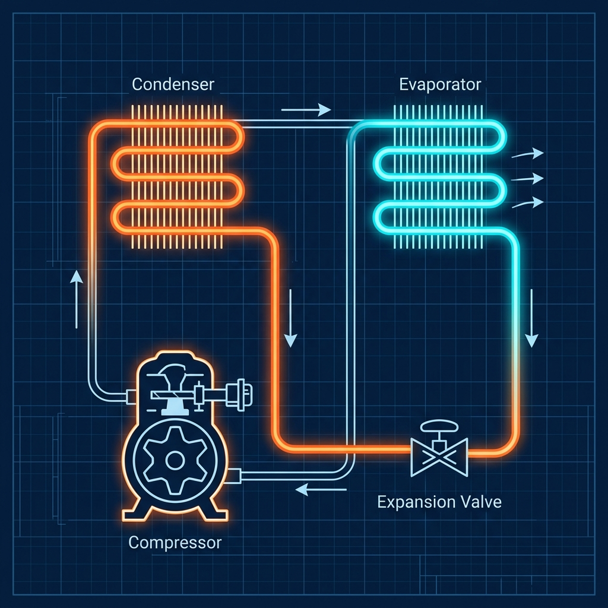
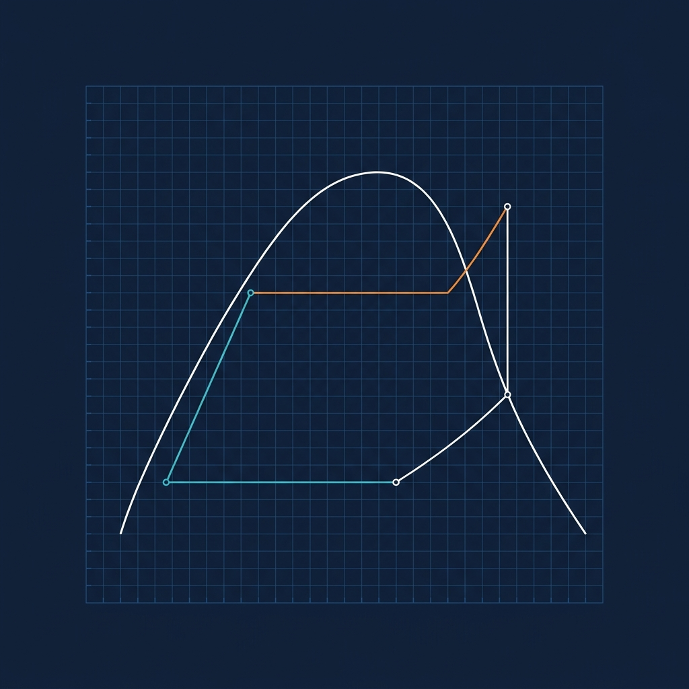
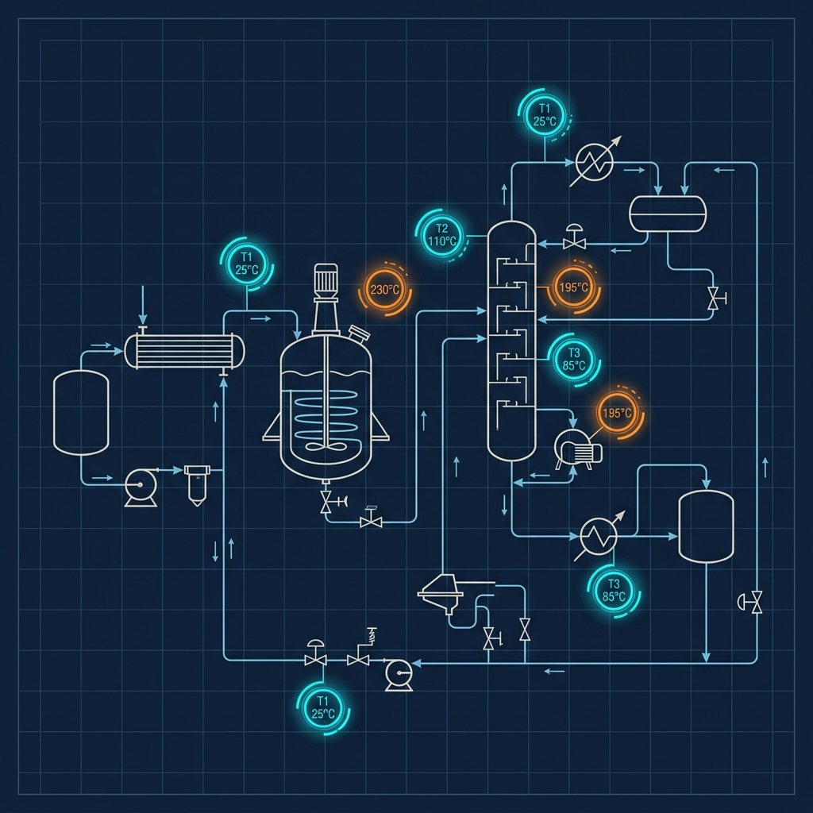
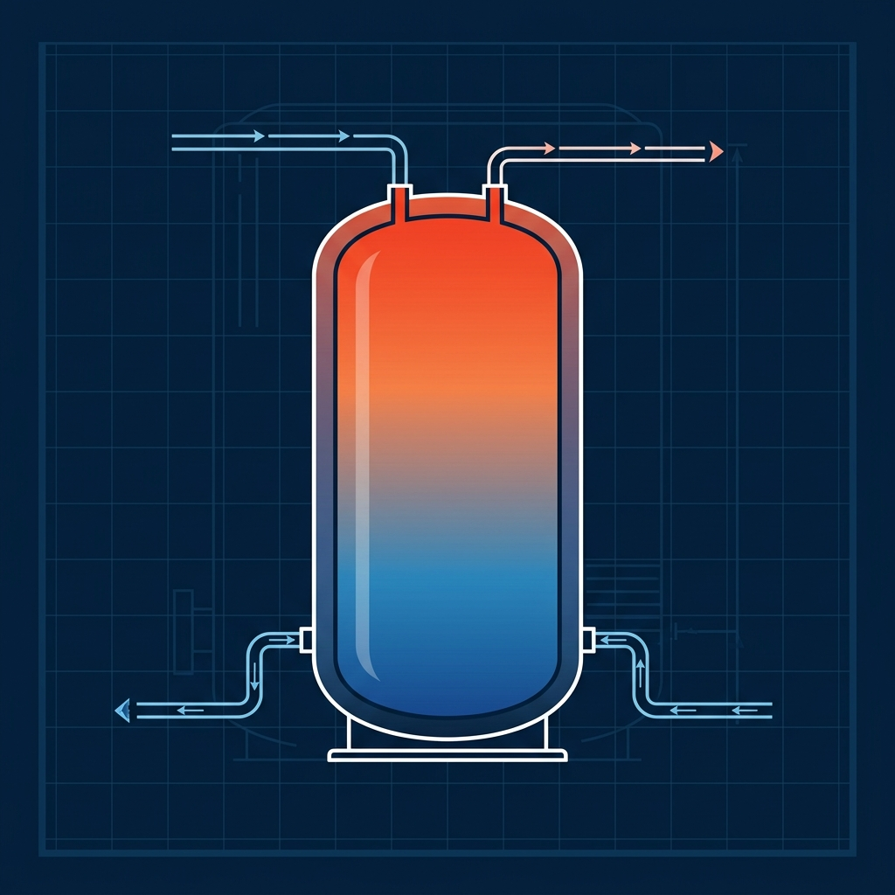
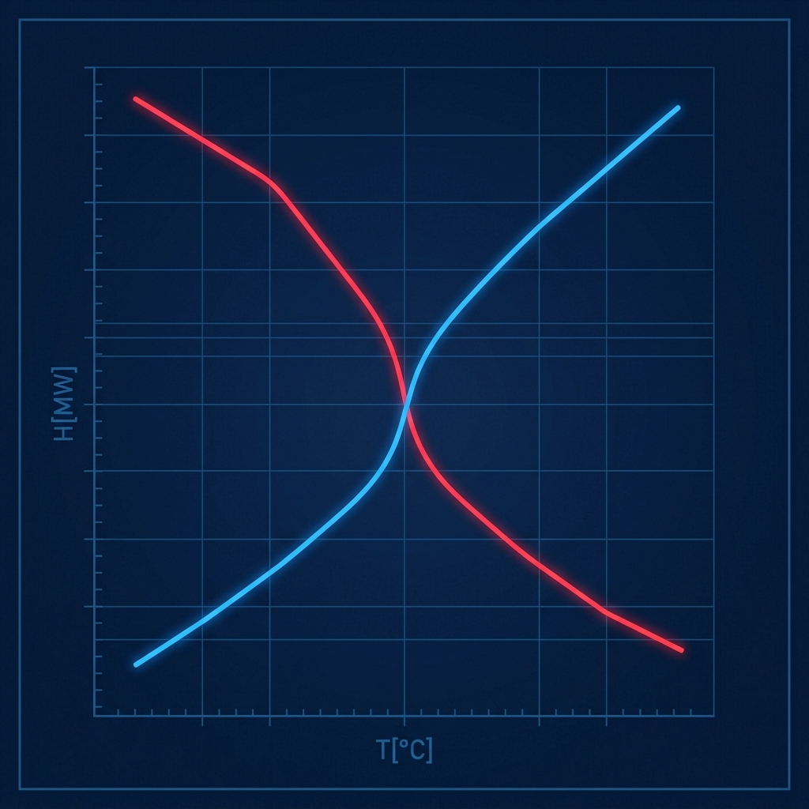

Heat Pump Visualizer
An interactive system visualizer coupled with a live heat pump simulator. View loop flows, pressures, and control feedback variables.
Launch Visualizer
p-h Diagram Studio
Visualize heat pump states directly on a Pressure-Enthalpy diagram. Dynamic coefficient of performance (COP) and thermodynamic state tracking.
Open p-h Diagram
PFD Overlay Studio
Overlay timeseries simulation data directly onto Process Flow Diagrams. Export animations as MP4 video files using WebCodecs.
Open PFD StudioSankeyLoop
Professional process and energy flow diagramming tool. Model mass/energy loops, perform scenario comparison, and overlay thermal gradients.
Launch SankeyLoop
Thermal Storage Calc
Simulate a stratified thermal storage water tank. Drag supply and return connections up and down the tank height and track temperature gradients.
Open Storage Calc
Pinch Utility Targeter
Input process streams to calculate utility heat loads, interval cascades, and locate pinch temperatures. Plots composite & grand composite curves.
Open Pinch Tool